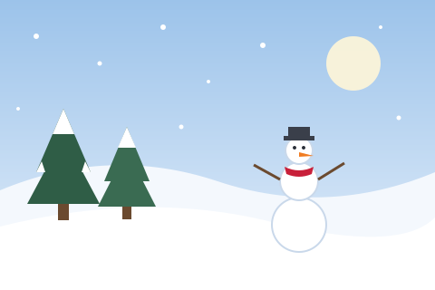
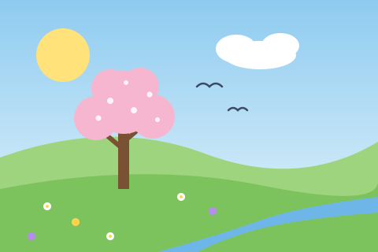
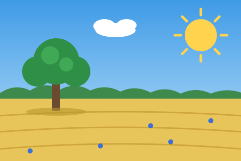
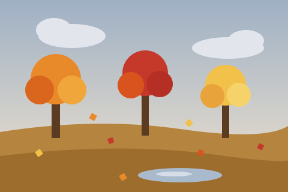

Четыре времени года в картинках — они дополняют раздел
«Времена года» на информационной странице.
Последняя картинка — миниатюра: нажмите на неё, и большое изображение
откроется в новой вкладке.

Зима. Декабрь — февраль. Самые короткие дни и самое низкое солнце в году.

Весна. Март — май. После весеннего равноденствия день становится длиннее ночи.

Лето. Июнь — август. Около 21 июня — самый длинный день в году.

Осень. Сентябрь — ноябрь. Листья меняют цвет, а день снова становится короче.Фото-ссылка. Горное озеро на закате. Нажмите на миниатюру,
чтобы открыть изображение 600 × 400 в новой вкладке.